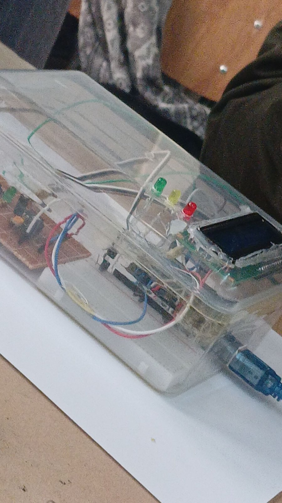
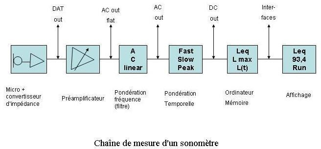
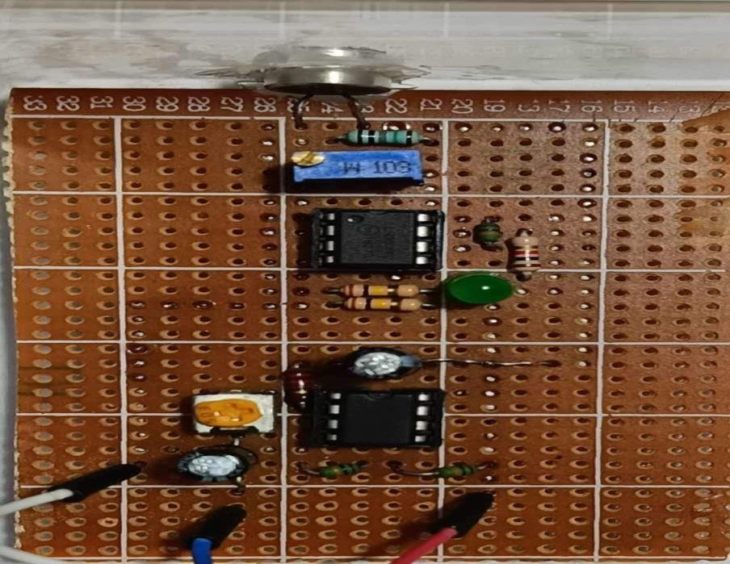
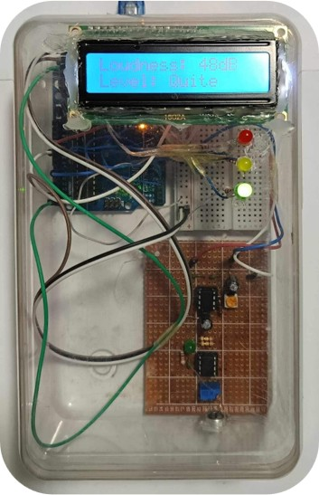
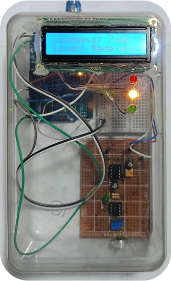
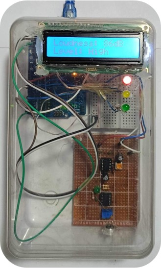

MINI-PROJET · ÉLECTROACOUSTIQUE · USTHB · 2023-2024
Décibelmètre numérique
Rendre le son visible
À partir de quel niveau un son devient-il du bruit ? Un microphone, un préamplificateur et une carte Arduino Uno mesurent le niveau sonore, l'affichent en décibels et le traduisent en couleur.
CONTEXTE
Du silence aux dommages auditifs
Le décibel est une échelle logarithmique : chaque fois que l'intensité sonore est multipliée par 2, le niveau augmente de 3 dB.
IL = 10 · log(I / I₀) avec I₀ = 10⁻¹² W/m²La limite d'exposition considérée comme sûre est de 85 dB pendant 8 heures par jour. Au-delà, l'audition peut se dégrader de façon irréversible. Ce seuil de 85 dB sert de limite haute au décibelmètre.
TROIS ZONES D'INTENSITÉ
- Silence · 1–15 dB
- Calme · 20–40 dB
- Conversation · 40–60 dB
- Environnement bruyant · 60–70 dB
- Perte auditive · 90–100 dB
- Dommages importants · 100+ dB
PRINCIPE DE FONCTIONNEMENT
Capter, amplifier, convertir, afficher
- Capter. Le microphone transforme les variations de pression acoustique en signal électrique, très faible.
- Amplifier. Le préamplificateur renforce ce signal sans le déformer, pour qu'il soit exploitable.
- Convertir. La carte Arduino Uno lit le signal et le convertit en niveau sonore, en décibels.
- Afficher. L'écran LCD indique le niveau en dB et sa catégorie.
- Alerter. Trois LED traduisent le niveau en couleur : vert, jaune ou rouge.
DU MODULE KY-038 AU MODULE SUR MESURE
Premiers essais : KY-038
Module du commerce avec microphone, potentiomètre de sensibilité et comparateur : il convertit le signal en niveau logique selon un seuil réglable.
Module réalisé
Construit sur plaque perforée d'après le KY-038, avec un préamplificateur ajouté pour disposer d'un signal analogique amplifié, exploitable par le microcontrôleur.
CARTE ARDUINO UNO


RÉSULTATS
Trois niveaux, trois couleurs
Au lieu d'afficher seulement un nombre, le système réagit visuellement : la LED allumée indique tout de suite dans quelle zone se situe le bruit.

Niveau faible, inférieur à 60 dB.

Niveau modéré, entre 60 et 85 dB.

Niveau élevé, au-dessus de 85 dB : alerte.
DÉMONSTRATION
Le décibelmètre en fonctionnement : affichage du niveau et LED de couleur.
- Mesure : le microphone capte le son et le préamplificateur renforce le signal avant sa lecture par l'Arduino.
- Affichage : l'écran LCD indique le niveau en dB et sa catégorie.
- Alerte : la LED verte s'allume sous 60 dB, la jaune entre 60 et 85 dB, la rouge au-dessus de 85 dB.
EN RÉSUMÉ
Le système capte, amplifie, traite et traduit le son en quelque chose qu'on comprend instantanément : la technologie rend visible ce qui était invisible.
CODE & DOCUMENTATION